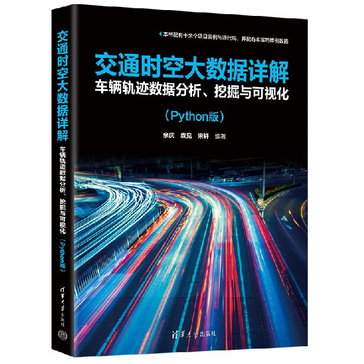

期刊论文Journal articles
* 通讯作者
- Rapid expansion amplifies the tidal effect and spatiotemporal mismatch in nationwide highway EV infrastructure: Evidence from 102 million charging records DOIJournal of Transport Geography, 137, 104818 · 2026
- Agent-based modeling of resilience and cascading failures in highway charging networks DOITransportation Research Part D: Transport and Environment, 158, 105478 · 2026
- Advances in Reinforcement Learning for Enhancing Scheduling of Hydrogen-Integrated Energy Systems DOIAdvances in Applied Energy, 100264 · 2026
- Two-Stage Optimization Approach for Dynamic Routing and Charging Scheduling in Electrified-Autonomous Flexible Transit DOITransportation Research Part E, 207, 104600 · 2026
- Modeling Electric Vehicle Behavior: Insights from Long-Term Charging and Energy Consumption Patterns through Empirical Trajectory Data DOIApplied Energy, 380, 125066 · 2025
- Global Estimation of Building-Integrated Facade and Rooftop Photovoltaic Potential by Integrating 3D Building Footprint and Spatio-Temporal DatasetsNexus (Cell Press), 2(2), 100060 · 2025
- Agent-Based Modeling of Network-Wide Metro Operations for Control Strategy Evaluation DOIComputers & Industrial Engineering, 209, 111448 · 2025
- Tracking the Source of Congestion Based on a Probabilistic Sensor Flow Assignment Model DOITransportation Research Part C, 165, 104736 · 2024
- A GIS-Based Framework for Synthesizing City-Scale Long-Term Individual-Level Spatial-Temporal Mobility DOIISPRS International Journal of Geo-Information, 13(7), 261 · 2024
- 交通运输系统工程与信息, 24(1), 159–167 · 2024
- 排阵式交叉口车道功能-信号控制协同优化及效益分析 知网中国公路学报, 36(10), 238–250 · 2023
- Route Flow Estimation Based on the Fusion of Probe Vehicle Trajectory and Automated Vehicle Identification Data DOITransportation Research Part C, 144, 103907 · 2022
- TransBigData: A Python Package for Transportation Spatio-Temporal Big Data Processing, Analysis and Visualization DOIJournal of Open Source Software, 7(71), 4021 · 2022
- 场景目标导向的交通信号控制效能评价指标体系 知网城市交通, 19(3), 61–68 · 2021
- Driver Back-Tracing Based on Automated Vehicle Identification Data DOITransportation Research Record, 2673(6), 84-93 · 2019
会议论文Conference papers
- Is Pure Battery Power Feasible for an Inland Liner Ship? A Flexible Battery Swapping Approach. ICAE 2025, Bangkok, Thailand. Paper ID 70. (Oral presentation)
- Yuan, J., Wang, X., Sun, L., Lei, M., Ma, W., An, K. (2024). Traffic Network Link Flow Imputation Based on Flow Regularized Matrix Factorization. 103rd TRB Annual Meeting, Washington DC. (Accepted)
- Yuan, J., An, K., Ma, W., Yu, Q. (2023). Traffic Information Mining Based on Queue Profile Geometry at Signalized Intersections. DOI SKI Canada 2023, Banff.
- Zheng, Z., Yuan, J., Zheng, N., An, K., Ma, W. (2023). Increasing the Capacity of Signalized Intersections with Dynamic Shared Through and Right-Turn Lane. WCTR 2023, Montreal. (Oral)
- Yuan, J., Li, L., Ma, W.* (2021). Robustness Analysis of Budget-Constrained Route Flow Observability Problem. CICTP 2021, ASCE, 2494-2503.
发明专利Patents
一种基于浮动车轨迹数据的复合路网瓶颈点识别方法
CN109712401B · 已授权 · 2021-05-11一种拥堵交通流溯源分析方法
CN110889427B · 已授权 · 2023-07-07一种面向公交信号优先高频多申请的动态控制方法
CN111724584B · 已授权 · 2021-09-03基于多源数据的中运量公共交通系统综合效益评价方法
CN113506013B · 已授权 · 2023-03-28一种多源数据支撑的交通管控诊断方法
CN113593222B · 已授权 · 2022-08-05
专著Book
ISBN 978-7-302-66814-6